지진상식
지진에 튼튼한 우리집 만들기
지진에 튼튼한 한옥 만들기
내진설계가 되지 않고 노후화된 한옥은 지진으로 인해 피해가 발생할 수 있다
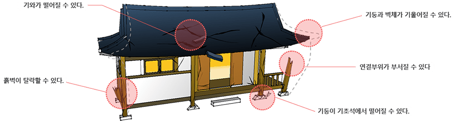
- 벽체의 보강방법
- 지진으로 벽체가 집안으로 탈락하는 것을 방지하기 위한 방법으로 주택 내부 벽체에 가새(대각선으로 설치된 막대기)를 고정하거나, 내력합판으로 보강하는 방법이다.
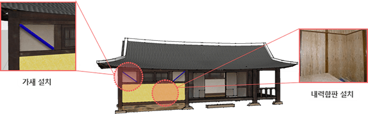
- 보·기둥 연결부의 보강방법
- 보(수평)와 기둥(수직)부재가 만나는 연결부에 보강철물을 부착하여 지진발생시 연결부가 손상 입는것을 방지하는 방법이다.
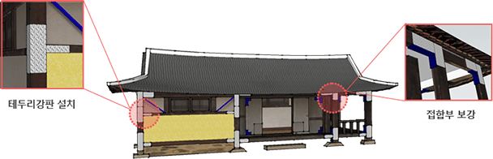
- 기와 탈락 방지 방법
- 지진으로 기와가 탈락하여 사람들을 다치게 하는 것을 방지하기 위한 방법으로 끈(녹슬지 않는 동선)으로 기와를 여러 군데 묶어주거나, 구멍 뚫린 기와를 못 등으로 지붕에 고정시켜주면 탈락 을 줄일 수 있다.
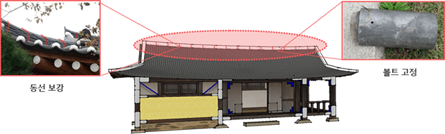
지진에 튼튼한 벽돌집 만들기
내진설계가 되지 않고 노후화된 벽돌집은 지진으로 인해 피해가 발생할 수 있다.
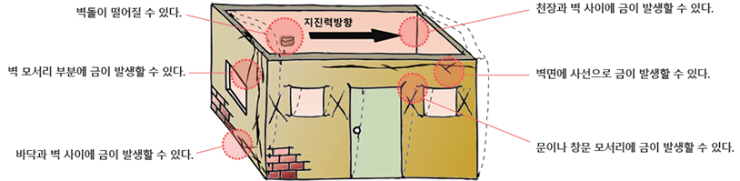
- 창문과 문 보강방법
- 개구부인 창문과 문 둘레에 테두리 강판 등을 설치하면 지진피해를 줄일 수 있다.
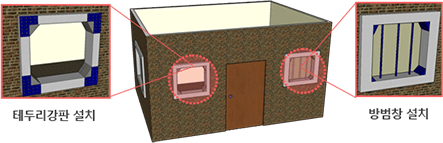

- 바닥·천장과 벽체·벽체의 보강방법
- 보강재를 활용하여 바닥·천장과 벽체의 연결을 강화하면 지진피해를 줄일 수 있다.
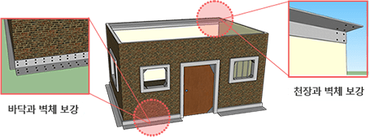
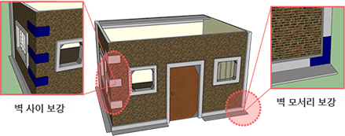
- 벽체 보강방법
- 벽체 전면에 탈락방지 보강재 등을 활용하여 보강하면 지진피해를 줄일 수 있다.
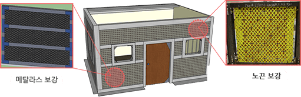
지진에 튼튼한 공동주택(아파트) 만들기
내진설계 기준에 따라 건축된 공동주택이지만 지진발생에 따른 비구조재 낙하 피해가 발생할 수 있다. 또한 높은 층일수록 오랫동안 더 크게 흔들리기 때문에 옥상 설비 전도, 천장마감재 낙하. 실내가구 및 제품 넘어짐, 외장재 낙하, 문의 변형 및 흔들림으로 대피 불가, 엘리베이터 갇힘 등의 문제가 발생할 수 있다.
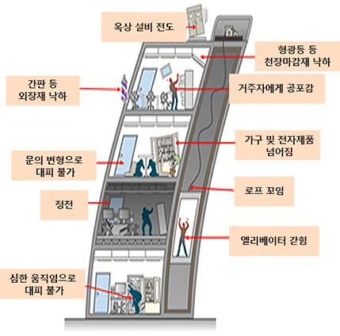
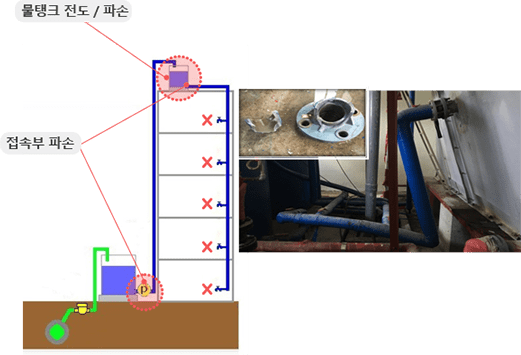
집안 가구 등 고정하기 : 지진 발생은 낮밤에 상관없이 발생할 수 있기 때문에 집안 내 가구 고정하기 등을 통해 지진피해를 줄일 수 있다.
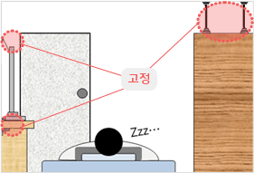
지진 흔들림에도 넘어지지 않도록
고정장치를 설치해야 합니다.
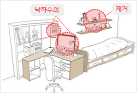
침대 위 낙하물을 제거하며, 침대 머리두는
위치에 모니터/ 책이 떨어지지 않도록 합니다.
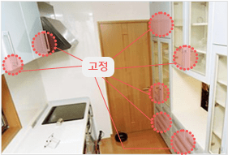
싱크대,환풍기 등 주방가구와 가르렌지, 칼 등
조리기구 등의 안전장치 및 고정이 필요합니다.
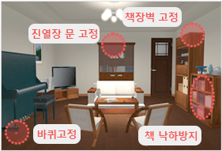
TV, 전등, 액자, 진열장 등 생활물품이
떨어져 깨지지 않도록 고정해야 합니다.
동일본대지진 시 건축물 층별 가구 넘어짐, 낙하, 이동발생 비율
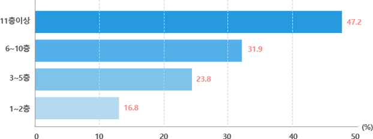
참고 : 동경 소방청[가구류 전도·낙하·이동방지 핸드북]